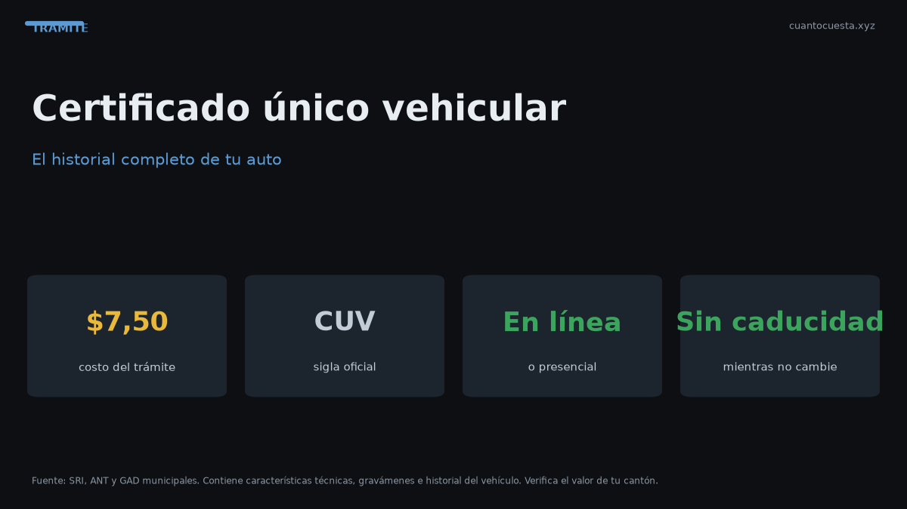

Certificado Único Vehicular (CUV) en Ecuador: qué es y cómo obtenerlo
El Certificado Único Vehicular (CUV) cuesta $7,50 en Ecuador. Qué información contiene, cuándo se necesita y cómo obtenerlo en línea o presencial.

El Certificado Único Vehicular (CUV) cuesta $7,50 en Ecuador y es el documento que acredita los datos legales y técnicos de un vehículo. Se necesita para traspasos, matrículas y varios trámites ante la ANT, el GAD o una aseguradora.
Qué es y para qué sirve
El CUV es el documento oficial que reúne la identificación del vehículo y de su propietario. Sustituye a la consulta de datos dispersos: en un solo certificado aparecen placa, motor, chasis, marca, modelo y datos del titular.
Sirve para:
- Traspaso de dominio: es documento soporte de propiedad cuando no se presenta la matrícula.
- Matriculación y renovación anual.
- Contratación de seguros, que piden los datos exactos del vehículo.
- Verificación antes de comprar un usado: confirma que el vendedor es el dueño registrado.
- Trámites ante la ANT o el GAD que exigen acreditar propiedad.
Antes de comprar un auto usado, pide el CUV. Es la forma más rápida de confirmar que quien vende es el propietario registrado y que los datos del vehículo coinciden con lo ofrecido.
Cuánto cuesta
| Trámite | Costo referencial |
|---|---|
| Certificado Único Vehicular (CUV) | $7,50 |
| Especie de matrícula | $25,00 |
| Placas nuevas o duplicado | $23,00 |
| Placas de motocicleta | $13,00 |
| Transferencia de dominio (servicio) | $10,00 |
| Cambio de características | $10,50 |
El CUV es el trámite más económico de la lista y uno de los más útiles.
Cómo obtenerlo en línea
El CUV se puede solicitar por los canales digitales habilitados de la ANT:
- Ingresa al portal de la ANT con tu usuario o regístrate.
- Ubica el servicio Certificado Único Vehicular (CUV).
- Ingresa la placa del vehículo o selecciónalo de tu lista de vehículos.
- Confirma los datos y paga los $7,50 por los medios habilitados.
- Descarga o imprime el certificado.
El certificado se emite digitalmente en la mayoría de los casos; si necesitas copia física, puedes imprimirlo.
Cómo obtenerlo presencial
Si prefieres ventanilla:
- Acude a una oficina de la ANT o a un punto autorizado.
- Presenta tu cédula (y la autorización del propietario si eres un tercero).
- Solicita el Certificado Único Vehicular indicando la placa.
- Paga la tasa de $7,50.
- Recibe el certificado impreso.
Si el trámite lo hace un tercero, necesita autorización del propietario y copia de la cédula de este. Las condiciones exactas varían por oficina; confírmalas antes de ir.
Qué información contiene
El CUV reúne los datos que cualquier trámite necesita:
- Placa del vehículo.
- Número de motor y número de chasis.
- Marca, modelo, año y características.
- Cilindraje y tipo de servicio.
- Datos del propietario registrado.
- Estado del vehículo frente a obligaciones.
Con esa información, la ANT, el GAD o la aseguradora pueden validar la identidad del vehículo sin pedir documentos adicionales.
Cuándo se necesita
Los casos más frecuentes:
- Antes de comprar un vehículo usado (verificación de propiedad).
- Durante el traspaso de dominio, como documento soporte.
- Al contratar un seguro, cuando la aseguradora pide datos exactos.
- En trámites de matrícula o cambio de características.
- Cuando extraviaste la matrícula y necesitas acreditar propiedad.
CUV, matrícula y placa: qué documento es cada uno
| Documento | Costo referencial | Cuándo se usa |
|---|---|---|
| Certificado Único Vehicular (CUV) | $7,50 | Acredita datos del vehículo y propietario |
| Especie de matrícula | $25,00 | Documento de circulación del vehículo |
| Placa nueva o duplicado | $23,00 | Reposición de placas (motos $13,00) |
| Transferencia de dominio (servicio) | $10,00 | Cambio de propietario |
| Cambio de características | $10,50 | Modificación de datos técnicos |
El CUV no reemplaza a la matrícula ni a las placas: los complementa y sirve como respaldo cuando el documento principal no está a mano.
Por qué conviene pedirlo antes de comprar un usado
Un usado puede tener multas, infracciones o datos que no coinciden con lo que el vendedor dice. El CUV confirma en minutos:
- Quién es el propietario registrado.
- Que motor y chasis coinciden con el vehículo físico.
- Que los datos técnicos son los que se ofertaron.
Por $7,50 es la verificación más barata posible antes de comprometer dinero.
Preguntas frecuentes
¿Cuánto cuesta? $7,50.
¿Se puede pedir sin ir a una oficina? Sí, por el portal de la ANT, con emisión digital.
¿Sirve como documento de propiedad? Sí: se acepta como documento soporte en traspasos, junto con la matrícula.
¿Un tercero puede solicitarlo? Sí, con autorización del propietario.
¿Cuánto tarda? La emisión digital permite descargarlo tras el pago; en ventanilla el tiempo varía por oficina.
Diferencia frente a una consulta de datos suelta
Una consulta de datos no acredita nada ante una ventanilla: el CUV sí, porque es el documento emitido con validez para el trámite. Por eso los requisitos de traspaso lo listan como documento soporte de propiedad, junto con la matrícula.
Antes de pagar: verifica tus datos
El CUV sirve también para detectar errores antes de que bloqueen un trámite:
- Confirma que placa y chasis corresponden al vehículo físico que vas a comprar.
- Revisa que el propietario registrado sea quien firma el contrato.
- Compara marca, modelo y año con lo publicado en el anuncio.
- Guarda el archivo: los trámites posteriores lo vuelven a pedir.
Resumen práctico
- El CUV cuesta $7,50 y acredita los datos legales y técnicos del vehículo.
- Se puede obtener en línea por el portal de la ANT o presencial en ventanilla.
- Contiene placa, motor, chasis, marca, modelo, cilindraje y datos del propietario.
- Se necesita para traspasos, matrícula, seguros y para verificar un usado antes de comprar.
- Las condiciones y canales pueden variar; confirma en la ANT antes de iniciar.
Los valores son referenciales para 2026 y pueden cambiar. Verifica la tarifa vigente y los requisitos del trámite en la ANT o tu GAD.
Sigue leyendo
Calendario de matriculación en Ecuador: qué mes te toca según tu placa
La matrícula se paga según el último dígito de tu placa. Revisa qué mes te corresponde, la mult
Cambio de características del vehículo en Ecuador: color, motor y carrocería
Cambiar el color, el motor o la carrocería de tu auto exige declararlo en la ANT: cuándo es obl
Cómo hacer el traspaso de dominio de un vehículo en Ecuador (paso a paso)
Traspaso de dominio en Ecuador paso a paso: los 4 pasos ante notaría y ANT, el impuesto del 1%
Duplicado de matrícula y placas en Ecuador: qué hacer si las pierdes
Perdiste o te robaron las placas: pasos, denuncia, requisitos, costos ($23 placas, $25 especie,
Impuesto del 1% por compraventa de vehículos usados en Ecuador
El impuesto por compraventa de vehículos usados en Ecuador es el 1% sobre el mayor valor entre
Cómo usamos estos datos
Las cifras de esta guía provienen de fuentes públicas oficiales y tarifarios de concesionarios publicados. Los valores son referenciales: tasas municipales, promociones y precios de repuestos varían. Verifica siempre en la entidad o concesionario antes de decidir.